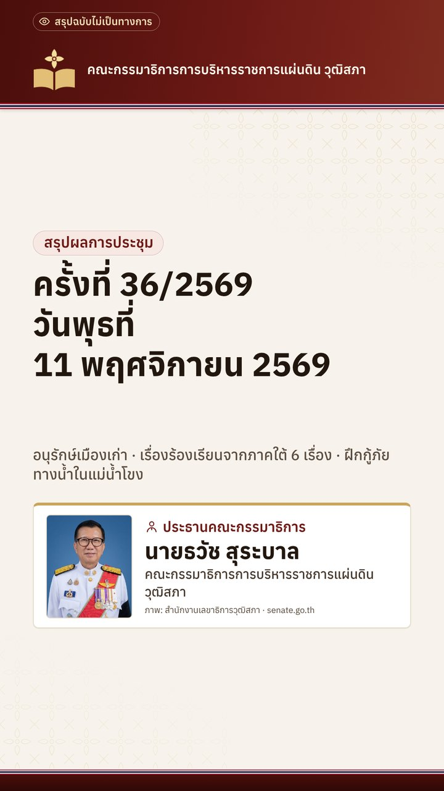
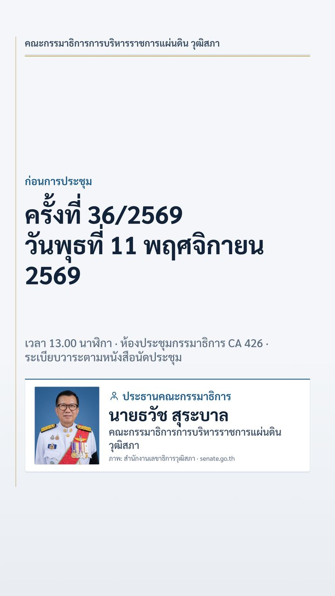

แนวทางอนุรักษ์และฟื้นฟูเมืองเก่า (ลำพูนโมเดล) และส่งเรื่องร้องเรียนจากพัทลุงและตรังถึงผู้ว่าราชการจังหวัด
ครั้งที่ 36/2569 · วันพุธที่ 11 พฤศจิกายน 256913.00 น. · ห้องประชุมกรรมาธิการ CA 426 ชั้น 4 อาคารรัฐสภา
 ประธานในที่ประชุมนายธวัช สุระบาล
ประธานในที่ประชุมนายธวัช สุระบาลสรุปโดยย่อ
คณะอนุกรรมาธิการรายงานแนวทางการอนุรักษ์และฟื้นฟูเมืองเก่า โดยรับฟังข้อมูลจากกรมศิลปากร สำนักงานนโยบายและแผนทรัพยากรธรรมชาติและสิ่งแวดล้อม และผู้ก่อตั้งลำพูน ซิตี้ แลป ความคืบหน้าการสัมมนา พ.ร.บ.อำนวยความสะดวกฯ วันที่ 20 พฤศจิกายน 2569 และการสังเกตการณ์การฝึกกู้ภัยทางน้ำในแม่น้ำโขง จังหวัดหนองคาย ที่ประชุมเห็นชอบให้มีหนังสือถึงผู้ว่าราชการจังหวัดพัทลุงและจังหวัดตรัง ขอให้ตรวจสอบข้อเท็จจริงและพิจารณาแก้ไขปัญหาตามเรื่องร้องเรียน 6 เรื่องจากโครงการสมาชิกวุฒิสภาพบประชาชน กลุ่มภาคใต้ (ตอนล่าง) และส่งข้อเสนอ 2 โครงการจาก อบต.อ่าวตง จังหวัดตรัง ถึงคณะกรรมาธิการการเกษตรและสหกรณ์ และคณะกรรมาธิการการท่องเที่ยวและกีฬา พร้อมเห็นชอบแต่งตั้งที่ปรึกษา 3 คน
เรื่องที่ที่ประชุมพิจารณา
- อนุฯ ส่วนกลางและส่วนภูมิภาค: แนวทางอนุรักษ์และฟื้นฟูเมืองเก่า ร่วมกับกรมศิลปากร สผ. และลำพูน ซิตี้ แลป (มาตรการผังเมืองและกฎหมายคุ้มครองโบราณสถาน พื้นที่กันชน Buffer Zone กรณีศึกษาลำพูนโมเดล)รับทราบ
- อนุฯ พัฒนาระบบบริหารราชการแผ่นดินฯ: ความคืบหน้าสัมมนา พ.ร.บ.อำนวยความสะดวกฯ 20 พ.ย. 2569 08.00–16.00 น. โรงแรมรามาการ์เด้นส์รับทราบ
- อนุฯ ภัยพิบัติ: ประธานคณะอนุฯ สังเกตการณ์การฝึกกู้ภัยทางน้ำในแม่น้ำโขง จ.หนองคาย (กรณีเรือท่องเที่ยวประสบอุบัติเหตุ หน่วยงานไทยและ สปป.ลาว ร่วมฝึก)รับทราบ
- สว.พบประชาชน ภาคใต้ (ตอนล่าง) 6 เรื่อง: แนวเขตที่ดินสาธารณประโยชน์ทะเลน้อย จ.พัทลุง (2 เรื่อง) / ร้องเรียนการลักลอบใช้อวนรุน ต.เกาะสุกร / สิทธิที่ดินทำกิน ต.เกาะสุกร / ทางเข้าออกท่าเทียบแพ ท่าเรือตะเสะ อ.หาดสำราญ และ ต.เกาะสุกร อ.ปะเหลียน / ซ่อมท่าเรือประมงบ้านแหลม ต.เกาะสุกร จ.ตรังมีหนังสือถึงผู้ว่าฯ พัทลุงและตรัง ขอให้ตรวจสอบข้อเท็จจริง พิจารณาแก้ไขปัญหา และแจ้งผลให้คณะกรรมาธิการทราบ
- สว.พบประชาชน: นายก อบต.อ่าวตง อ.วังวิเศษ จ.ตรัง เสนอ 2 โครงการ (พัฒนาแหล่งท่องเที่ยวน้ำตกร้อยชั้นพันวัง / เขื่อนเก็บกักน้ำบ้านวังหินพร้อมระบบส่งน้ำ ม.7 ต.อ่าวตง)มีหนังสือถึง กมธ.การเกษตรและสหกรณ์ และ กมธ.การท่องเที่ยวและกีฬา เพื่อพิจารณาตามหน้าที่และอำนาจ
- แต่งตั้งที่ปรึกษากิตติมศักดิ์ 1 คน และที่ปรึกษาคณะอนุฯ ส่วนกลางและส่วนภูมิภาค 2 คน (มีผล 12 พ.ย. 2569)เห็นชอบ
วิดีโอ

วิดีโอสรุปผลการประชุมความยาว 3:47 นาที · กดเพื่อดู
วิดีโอก่อนการประชุมความยาว 1:40 นาที · กดเพื่อดู